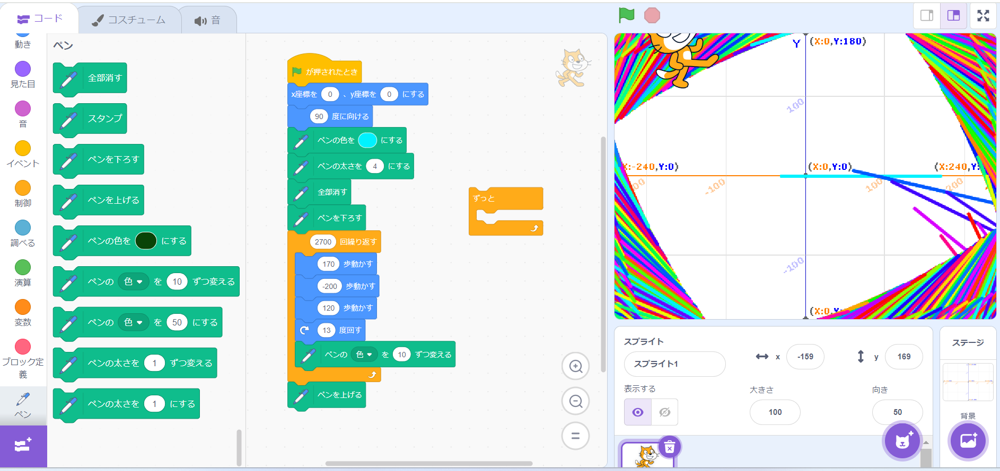

1-1 サイエンスアート

1.内容
スクラッチを使って線を書くプログラムを作成した．このプログラムは旗が押されていると座標（0,0）にスプライトを配置し，向きを90度にする．
その後，ペンの色を水色にし，ペンの太さを4にする．今までの軌跡をすべて消してから，ペンを下ろし，ペンの色を10ずつ変えながら170進み，
200下がり120進む．そして15°回転する動きを2700回繰り返すプログラムである．
2.感想
自分でプログラムした行動で描くアートはとても面白く，きれいだと感じた．自分でもう少し改良しさらに美しいアートを描きたいと思った．